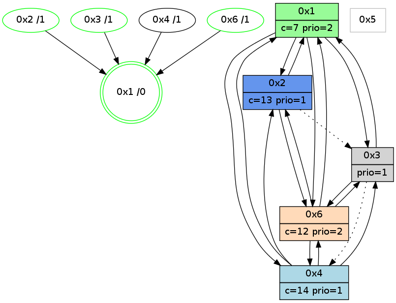

>> << IDX [start] -100 -25 -5 +0 +5 +25 +100 [1005.03455114]
 Previous packets
----------------------------------------------------------------------
1000.113469 beacon01(adaf) #0 coord=01,02,05,03,04,06 cycle=432.0ms assoc
-- color-indic=1 64 b8 b0
1000.123431 beacon02(adaf) #0 coord=01,02,05,03,04,06 cycle=432.0ms assoc 64 e9 4f
1000.133430 beacon05(adaf) #0 coord=01,02,05,03,04,06 cycle=432.0ms assoc 64 4f 65
1000.143430 beacon03(adaf) #0 coord=01,02,05,03,04,06 cycle=432.0ms assoc 64 d3 41
1000.153432 beacon04(adaf) #0 coord=01,02,05,03,04,06 cycle=432.0ms assoc 64 75 6b
1000.163432 beacon06(adaf) #0 coord=01,02,05,03,04,06 cycle=432.0ms assoc 64 01 77
1000.175715 [Color(3) seq=135 @0:0 prio=1 c=7,c,d;1,4,6,8,9,b,e]
1000.179856 [Color(2) seq=193 @0:0 color=13 prio=1 c=7,c,e;1,4,6,8,9,b]
1000.181925 [Hello(6): seq=719 sym=4,2,1,3 sysInfo=hasWarning stat=4:3,0,2,0/2:13,4,3,2/1:4,3,7,1/3:15,3,15,6]
1000.184790 [Hello(1): seq=706 sym=2,4,6,3 sysInfo=hasWarning,coloring-mode-on,ColoringModeRequestCalled stat=2:10,8,5,3/4:3,0,2,0/6:10,5,12,2/3:7,1,5,1]
1000.194280 [Color(6) seq=191 @0:0 color=12 prio=2 c=7,d,e;1,4,6,8,9,b]
----------------------------------------------------------------------
1000.605577 beacon01(adaf) #0 coord=01,02,05,03,04,06 cycle=432.0ms assoc
-- color-indic=1 64 7c df
1000.615539 beacon02(adaf) #0 coord=01,02,05,03,04,06 cycle=432.0ms assoc 64 2d 20
1000.625538 beacon05(adaf) #0 coord=01,02,05,03,04,06 cycle=432.0ms assoc 64 8b 0a
1000.635537 beacon03(adaf) #0 coord=01,02,05,03,04,06 cycle=432.0ms assoc 64 17 2e
1000.645539 beacon04(adaf) #0 coord=01,02,05,03,04,06 cycle=432.0ms assoc 64 b1 04
1000.655541 beacon06(adaf) #0 coord=01,02,05,03,04,06 cycle=432.0ms assoc 64 c5 18
1000.667240 [Hello(4): seq=807 sym=2,1,6,3 sysInfo=hasWarning stat=2:0,0,0,0/1:10,9,11,0/6:5,9,11,3/3:3,5,1,0]
1000.670610 [STC(1) #0.147 new-neigh,tree-change,inconsistent-stability,stable,to-color d=0]
1000.672688 PARSE ERROR************************
Traceback (most recent call last):
File "PacketAnalysis.py", line 167, in showOperaPacket
structPacket = OperaPacketParse.parsePacket(rawPacket)
File "../../pkg-python/HipSens/Core/OperaPacketParse.py", line 461, in parsePacket
return parseHelloMessage(data)
File "../../pkg-python/HipSens/Core/OperaPacketParse.py", line 109, in parseHelloMessage
sysInfo,stability,colorInfo = struct.unpack("!HBB", linkList[0:4])
error: unpack requires a string argument of length 4
48 1e 03 00 03 25 00 02 02 04 06 00 01 00 01 02 04 00 53 04 00 02 00 00 4c 06 25 0c 16 d3 00 00 53 fa
1000.677800 [Color(1) seq=233 @0:0 color=7 prio=2 c=1,4,6,8,9,b,c,d;0,2,3,5,a,e]
----------------------------------------------------------------------
1001.097685 beacon01(adaf) #0 coord=01,02,05,03,04,06 cycle=432.0ms assoc
-- color-indic=1 64 30 6f
1001.107646 beacon02(adaf) #0 coord=01,02,05,03,04,06 cycle=432.0ms assoc 64 61 90
1001.117647 beacon05(adaf) #0 coord=01,02,05,03,04,06 cycle=432.0ms assoc 64 c7 ba
1001.127647 beacon03(adaf) #0 coord=01,02,05,03,04,06 cycle=432.0ms assoc 64 5b 9e
1001.137647 beacon04(adaf) #0 coord=01,02,05,03,04,06 cycle=432.0ms assoc 64 fd b4
1001.147650 beacon06(adaf) #0 coord=01,02,05,03,04,06 cycle=432.0ms assoc 64 89 a8
1001.158531 [Hello(1): seq=707 sym=2,4,6,3 sysInfo=hasWarning,coloring-mode-on,ColoringModeRequestCalled stat=2:11,8,5,3/4:3,0,2,0/6:10,6,12,2/3:7,1,5,1]
1001.163789 [Color(2) seq=194 @0:0 color=13 prio=1 c=7,c,e;1,4,6,8,9,b]
1001.166062 [STC(6)->1 #0.147 new-neigh,tree-change,inconsistent-stability,stable,to-color d=1]
1001.168242 [STC(4)->1 #0.147 new-neigh,tree-change,inconsistent-stability,to-color d=1]
1001.177903 [Color(6) seq=192 @0:0 color=12 prio=2 c=7,d,e;1,4,6,8,9,b]
----------------------------------------------------------------------
1001.589793 beacon01(adaf) #0 coord=01,02,05,03,04,06 cycle=432.0ms assoc
-- color-indic=1 64 f4 00
1001.599754 beacon02(adaf) #0 coord=01,02,05,03,04,06 cycle=432.0ms assoc 64 a5 ff
1001.609755 beacon05(adaf) #0 coord=01,02,05,03,04,06 cycle=432.0ms assoc 64 03 d5
1001.619754 beacon03(adaf) #0 coord=01,02,05,03,04,06 cycle=432.0ms assoc 64 9f f1
1001.629754 beacon04(adaf) #0 coord=01,02,05,03,04,06 cycle=432.0ms assoc 64 39 db
1001.639755 beacon06(adaf) #0 coord=01,02,05,03,04,06 cycle=432.0ms assoc 64 4d c7
1001.653671 [Color(1) seq=234 @0:0 color=7 prio=2 c=1,4,6,8,9,b,c,d;0,2,3,5,a,e]
----------------------------------------------------------------------
1002.081901 beacon01(adaf) #0 coord=01,02,05,03,04,06 cycle=432.0ms assoc
-- color-indic=1 64 8c ad
1002.091863 beacon02(adaf) #0 coord=01,02,05,03,04,06 cycle=432.0ms assoc 64 dd 52
1002.101864 beacon05(adaf) #0 coord=01,02,05,03,04,06 cycle=432.0ms assoc 64 7b 78
1002.111862 beacon03(adaf) #0 coord=01,02,05,03,04,06 cycle=432.0ms assoc 64 e7 5c
1002.121862 beacon04(adaf) #0 coord=01,02,05,03,04,06 cycle=432.0ms assoc 64 41 76
1002.131865 beacon06(adaf) #0 coord=01,02,05,03,04,06 cycle=432.0ms assoc 64 35 6a
1002.143371 [Hello(1): seq=708 sym=2,4,6,3 sysInfo=hasWarning,coloring-mode-on,ColoringModeRequestCalled stat=2:11,9,6,3/4:3,0,3,0/6:10,7,13,2/3:7,1,5,1]
1002.146050 [Color(2) seq=195 @0:0 color=13 prio=1 c=7,c,e;1,4,6,8,9,b]
1002.149209 [Color(6) seq=193 @0:0 color=12 prio=2 c=7,d,e;1,4,6,8,9,b]
1002.151797 [Color(5) seq=141 @0:0 color=11/12 prio=1 c=8,d;4,7,9,c,e]
1002.153182 [Color(3) seq=137 @0:0 prio=1 c=7,c,d;1,4,6,8,9,b,e]
----------------------------------------------------------------------
1002.574011 beacon01(adaf) #0 coord=01,02,05,03,04,06 cycle=432.0ms assoc
-- color-indic=1 64 48 c2
1002.583971 beacon02(adaf) #0 coord=01,02,05,03,04,06 cycle=432.0ms assoc 64 19 3d
1002.593972 beacon05(adaf) #0 coord=01,02,05,03,04,06 cycle=432.0ms assoc 64 bf 17
1002.603972 beacon03(adaf) #0 coord=01,02,05,03,04,06 cycle=432.0ms assoc 64 23 33
1002.613972 beacon04(adaf) #0 coord=01,02,05,03,04,06 cycle=432.0ms assoc 64 85 19
1002.623973 beacon06(adaf) #0 coord=01,02,05,03,04,06 cycle=432.0ms assoc 64 f1 05
1002.635674 [Hello(4): seq=809 sym=2,1,6,3 sysInfo=hasWarning stat=2:0,0,0,0/1:11,11,12,0/6:6,10,11,3/3:4,6,1,0]
1002.639419 [Hello(2): seq=1297 sym=3,6,1 sysInfo=hasWarning stat=3:0,12,11,4/6:0,8,10,1/1:11,11,2,0]
1002.641664 [Color(1) seq=235 @0:0 color=7 prio=2 c=1,4,6,8,9,b,c,d;0,2,3,5,a,e]
----------------------------------------------------------------------
1003.066119 beacon01(adaf) #0 coord=01,02,05,03,04,06 cycle=432.0ms assoc
-- color-indic=1 64 04 72
1003.076082 beacon02(adaf) #0 coord=01,02,05,03,04,06 cycle=432.0ms assoc 64 55 8d
1003.086080 beacon05(adaf) #0 coord=01,02,05,03,04,06 cycle=432.0ms assoc 64 f3 a7
1003.096081 beacon03(adaf) #0 coord=01,02,05,03,04,06 cycle=432.0ms assoc 64 6f 83
1003.106081 beacon04(adaf) #0 coord=01,02,05,03,04,06 cycle=432.0ms assoc 64 c9 a9
1003.116084 beacon06(adaf) #0 coord=01,02,05,03,04,06 cycle=432.0ms assoc 64 bd b5
1003.128383 [Color(3) seq=138 @0:0 prio=1 c=7,c,d;1,4,6,8,9,b,e]
1003.132468 [Color(2) seq=196 @0:0 color=13 prio=1 c=7,c,e;1,4,6,8,9,b]
1003.134562 [Hello(1): seq=709 sym=2,4,6,3 sysInfo=hasWarning,coloring-mode-on,ColoringModeRequestCalled stat=2:11,10,6,3/4:3,0,3,0/6:10,7,13,2/3:7,2,5,1]
1003.136754 [STC(1) #0.148 new-neigh,tree-change,inconsistent-stability,stable,to-color d=0]
1003.138315 [Hello(6): seq=722 sym=4,2,1,3 sysInfo=hasWarning stat=4:3,0,2,0/2:15,4,3,2/1:6,6,8,1/3:1,4,15,6]
1003.141155 [Color(6) seq=194 @0:0 color=12 prio=2 c=7,d,e;1,4,6,8,9,b]
----------------------------------------------------------------------
1003.558227 beacon01(adaf) #0 coord=01,02,05,03,04,06 cycle=432.0ms assoc
-- color-indic=1 64 c0 1d
1003.568188 beacon02(adaf) #0 coord=01,02,05,03,04,06 cycle=432.0ms assoc 64 91 e2
1003.578188 beacon05(adaf) #0 coord=01,02,05,03,04,06 cycle=432.0ms assoc 64 37 c8
1003.588188 beacon03(adaf) #0 coord=01,02,05,03,04,06 cycle=432.0ms assoc 64 ab ec
1003.598189 beacon04(adaf) #0 coord=01,02,05,03,04,06 cycle=432.0ms assoc 64 0d c6
1003.608189 beacon06(adaf) #0 coord=01,02,05,03,04,06 cycle=432.0ms assoc 64 79 da
1003.620090 [Hello(4): seq=810 sym=2,1,6,3 sysInfo=hasWarning stat=2:1,0,0,0/1:12,12,13,0/6:7,11,11,3/3:4,7,1,0]
1003.623223 [STC(4)->1 #0.148 new-neigh,tree-change,inconsistent-stability,to-color d=1]
1003.627823 [Color(1) seq=236 @0:0 color=7 prio=2 c=1,4,6,8,9,b,c,d;0,2,3,5,a,e]
----------------------------------------------------------------------
1004.050334 beacon01(adaf) #0 coord=01,02,05,03,04,06 cycle=432.0ms assoc
-- color-indic=1 64 8d 1a
1004.060295 beacon02(adaf) #0 coord=01,02,05,03,04,06 cycle=432.0ms assoc 64 dc e5
1004.070296 beacon05(adaf) #0 coord=01,02,05,03,04,06 cycle=432.0ms assoc 64 7a cf
1004.080295 beacon03(adaf) #0 coord=01,02,05,03,04,06 cycle=432.0ms assoc 64 e6 eb
1004.090296 beacon04(adaf) #0 coord=01,02,05,03,04,06 cycle=432.0ms assoc 64 40 c1
1004.100296 beacon06(adaf) #0 coord=01,02,05,03,04,06 cycle=432.0ms assoc 64 34 dd
1004.112451 [Hello(1): seq=710 sym=2,4,6,3 sysInfo=hasWarning,coloring-mode-on,ColoringModeRequestCalled stat=2:11,10,7,3/4:3,0,3,0/6:11,8,13,2/3:7,2,5,1]
1004.115121 [Hello(6): seq=723 sym=4,2,1,3 sysInfo=hasWarning stat=4:4,0,3,0/2:15,4,3,2/1:6,7,8,1/3:2,4,0,6]
1004.117969 [Color(3) seq=139 @0:0 prio=1 c=7,c,d;1,4,6,8,9,b,e]
1004.120020 [Color(6) seq=195 @0:0 color=12 prio=2 c=7,d,e;1,4,6,8,9,b]
1004.122100 [Color(2) seq=197 @0:0 color=13 prio=1 c=7,c,e;1,4,6,8,9,b]
----------------------------------------------------------------------
1004.542443 beacon01(adaf) #0 coord=01,02,05,03,04,06 cycle=432.0ms assoc
-- color-indic=1 64 49 75
1004.552404 beacon02(adaf) #0 coord=01,02,05,03,04,06 cycle=432.0ms assoc 64 18 8a
1004.562405 beacon05(adaf) #0 coord=01,02,05,03,04,06 cycle=432.0ms assoc 64 be a0
1004.572406 beacon03(adaf) #0 coord=01,02,05,03,04,06 cycle=432.0ms assoc 64 22 84
1004.582405 beacon04(adaf) #0 coord=01,02,05,03,04,06 cycle=432.0ms assoc 64 84 ae
1004.592406 beacon06(adaf) #0 coord=01,02,05,03,04,06 cycle=432.0ms assoc 64 f0 b2
1004.604101 [Hello(4): seq=811 sym=2,1,6,3 sysInfo=hasWarning stat=2:1,1,0,0/1:13,13,13,0/6:8,12,11,3/3:5,8,2,0]
1004.606309 [Color(1) seq=237 @0:0 color=7 prio=2 c=1,4,6,8,9,b,c,d;0,2,3,5,a,e]
1004.607851 [Hello(2): seq=1299 sym=6,1 asym=3 sysInfo=hasWarning stat=6:1,9,10,1/1:12,12,3,0/3:0,12,11,4]